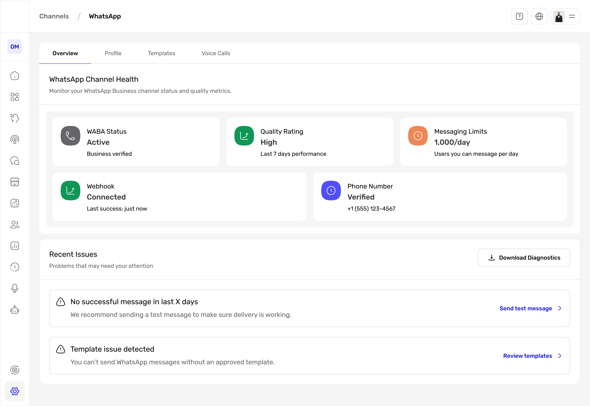
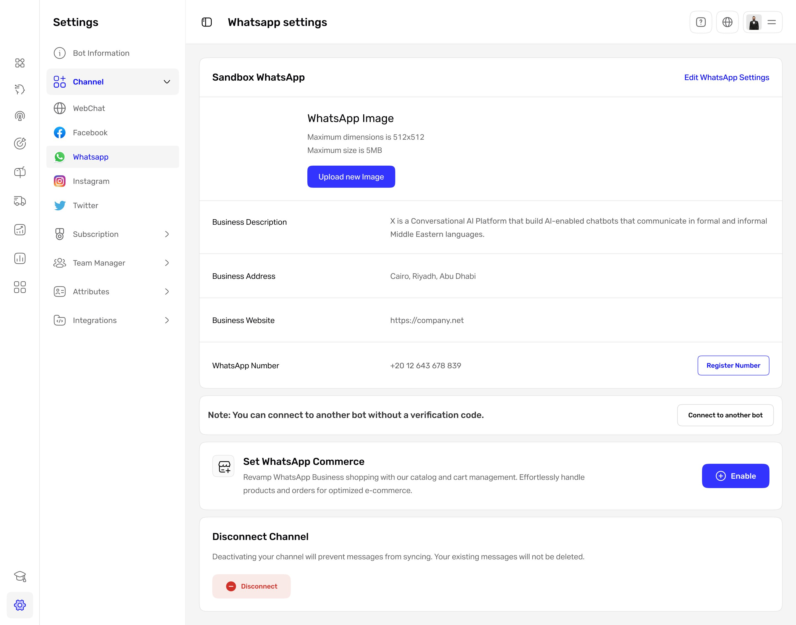
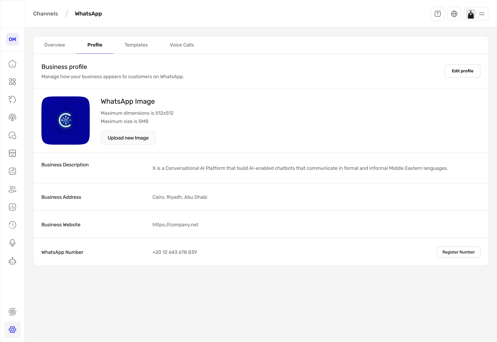
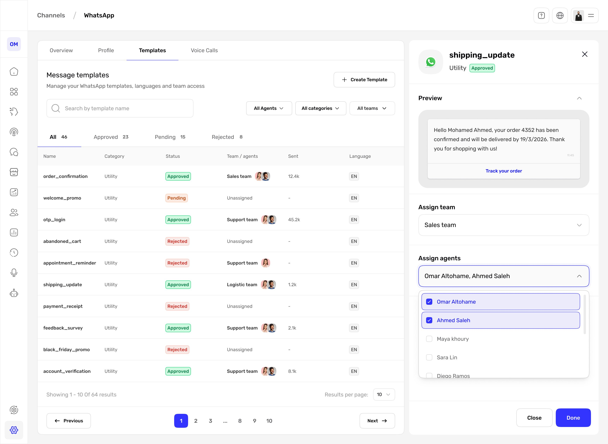
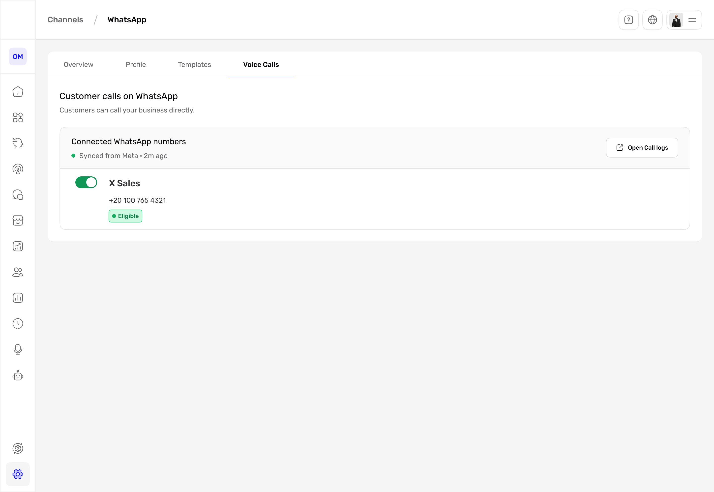

A settings page that became a channel.
After WhatsApp was connected, every control lived on one crowded page: no clear title, no sense of whether the channel was healthy, and a Disconnect that asked for no confirmation. I rebuilt it into a four-tab channel, made what's editable and what's risky obvious, and added the two things it was missing: message templates and voice calls.

Connecting WhatsApp was step one. Living with it was the problem.
Once a business connected WhatsApp, it landed on a single settings page that tried to do everything at once. Business identity sat in rows that looked editable but were not. Several equally weighted actions competed with no clear primary. A vague note about connecting another bot sat in the middle. And Disconnect, the one destructive action, was out in the open with no confirmation. The page also stopped short: there was no way to see whether the channel was healthy, and the two things businesses lean on most, managing message templates and taking customer calls, were not there at all. As the solo product designer, working with a PM and engineers, I audited the page, restructured it, and designed the new template and voice-calls experiences.
I scored the connected settings page against usability heuristics.
With WhatsApp connected, this is the page where businesses manage the channel day to day, so I evaluated it against Nielsen's usability heuristics. Here is the page with the problems marked.

1233345The connected WhatsApp settings page. One scroll carried identity, several competing actions, a vague note, and an exposed Disconnect, under a title that never said what the page controlled. Marker 3 repeats on each competing action. The markers map to the findings below.
The issues clustered into two themes: the page never framed what it was or guarded its riskiest action, and it showed every control at once with no primary. Five findings, each tied to a heuristic and rated by severity:
| Finding | Heuristic broken | Severity |
|---|---|---|
| Page title "Whatsapp settings" does not say what the page controls | Match between system and the real world | Low |
| Business info is styled like an editable form but is read-only | Match between system and the real world | Medium |
| Several equally weighted actions with no clear primary | Aesthetic and minimalist design | Medium |
| The "connect another bot" note is vague about when it applies | Help and documentation | Low |
| Disconnect is exposed inline with no confirmation | Error prevention | High |
Every control was present. Nothing was prioritized.
The findings pointed one way. The page listed identity, actions, and a destructive control on a single scroll, but never told you what the page was, what you could change, or what was safe to touch. The fix was not removing features. It was giving them an information architecture: name the channel, separate what you monitor from what you manage, and make the dangerous things deliberate.
Settings didn't need fewer options. It needed somewhere to put them.
Five decisions that turned a page into a channel.
Scroll to explore the structure
The redesign in one picture. The page becomes a named WhatsApp channel with four tabs. Monitoring (Overview) is separated from managing identity (Profile), messaging (Templates), and calls (Voice Calls), and the one destructive action lives in a danger zone.
Name the channel, then split it into tabs
The page had no real title and stacked everything on one scroll. I retitled it from "Whatsapp settings" to a WhatsApp channel under Channels, and split it into four tabs, Overview, Profile, Templates, and Voice Calls, so monitoring, identity, messaging, and calls each have a place. I considered one long page with section anchors, but only tabs made the channel's parts legible at a glance.
Make identity read-only, with one way to edit
The business fields looked like a form but could not be edited in place. Profile is now an explicit read-only view of how the business appears on WhatsApp, with a single Edit profile action, so what is editable, and where to change it, is never in doubt. The exposed Disconnect moved too: it now sits in a danger zone behind a confirmation step, with its consequence spelled out, so a channel is never dropped by accident.
Lead with health, not settings
The old page never showed whether the channel actually worked. The default Overview tab now surfaces WABA status, quality rating, messaging limits, webhook, and the verified number, then lists the recent issues that need attention with a direct way to act on each, like sending a test message or reviewing templates. The first thing you see is the channel's state, not a wall of controls.
Make message templates a workspace
Sending on WhatsApp requires approved templates, but the old page could not manage them. Templates became a real workspace: each one shows its status, category, sent volume, and language, can be assigned to a team or specific agents, and can be previewed before it goes out. Approval state is visible up front, so a rejected template is never a surprise mid-send.
Turn voice calls into a clear opt-in
Customers increasingly call, but there was no way to manage it here. Voice calls became an explicit opt-in per number, with an eligibility signal and numbers synced from Meta, plus a link to call logs. Turning it on is deliberate and reversible, and the eligibility badge sets the right expectation before anyone flips the switch.
What it looks like
Overview. The default tab leads with channel health, then lists the issues that need attention with a direct way to act on each.

Profile. Business identity as a read-only view with a single Edit profile action, so what you can change is obvious.

Templates. Every template's status, category, sent volume, language, and team or agent access in one place, with a live preview before you assign.

Voice Calls. A clear opt-in per number with an eligibility signal, synced from Meta, and a link to call logs.
The shift, side by side.
One page, every job
Identity that looked editable but was not, several equally weighted actions, a vague note, and Disconnect in the open, all on one scroll under a generic title.How I'd judge the design
| Metric | Target | Why it matters |
|---|---|---|
| Key task success (edit profile, register number, assign a template) | ≥ 90% | Findability |
| Time to first key action | under 30 sec | Efficiency |
| Accidental disconnects | ≤ 1% | Safety |
| Active templates assigned to a team or agent | ≥ 80% | Governance |
| Settings satisfaction | ≥ 4 / 5 | Experience |
What changed
- The settings page became a titled WhatsApp channel with four tabs: Overview, Profile, Templates, and Voice Calls.
- Business identity is now a read-only profile with a single Edit action, so what you can change is unambiguous.
- Disconnect moved out of the main view into a danger zone behind a confirmation step.
- Channel health and the issues that need attention now sit on the first tab, each with a way to act on it.
- Two missing capabilities are now first-class: message templates with status, language, and team or agent access, and customer voice calls with a clear opt-in.
What was one crowded page is now a channel you can actually run.
If I did it again: I would test the four tab labels with real operators to confirm they map to how people think about a channel, pressure-test the Disconnect confirmation copy with someone who has actually churned a channel, and instrument which Recent Issues people act on, to confirm the Overview earns its place as the default tab.
Depth vs. a longer page. Splitting one page into four tabs hides some controls behind a click. I accepted that because a single scroll mixing identity, competing actions, and a destructive control was the actual problem. For power users I would consider a compact, single-scroll mode.